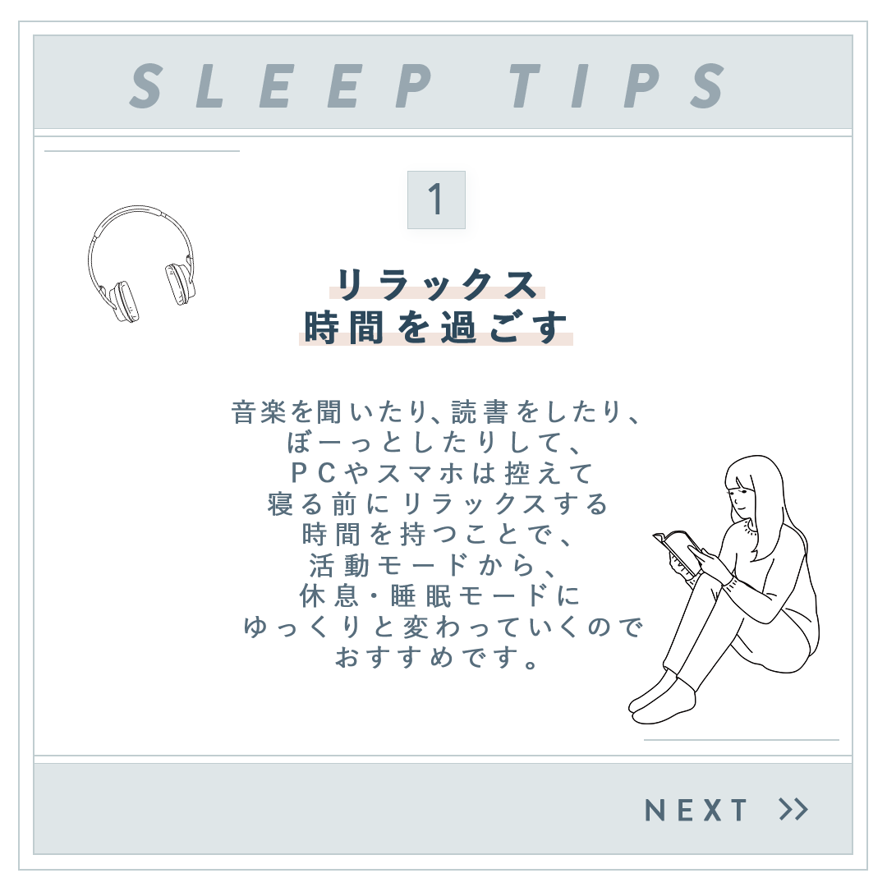
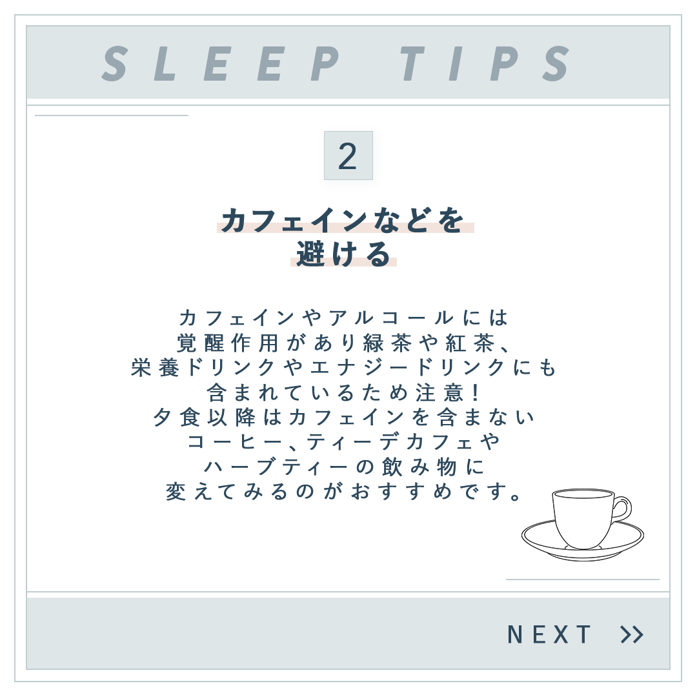
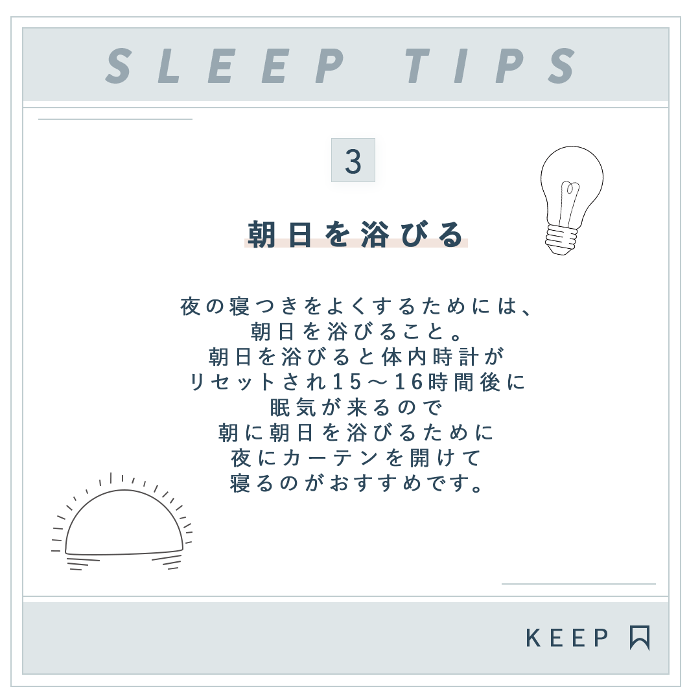

現代人は、スマートフォンやPCの長時間利用や不規則な生活習慣により、
睡眠の質が低下しやすい傾向があります。
また、睡眠改善に関する情報は多く存在するものの分散しており、
実生活に取り入れやすい形で整理されていない点が課題でした。
「SLEEP TIPS」を番号付きで発信し、継続的に閲覧・実践してもらえるように設計。
柔らかなブルーを基調に余白を活かしたレイアウトで、落ち着きや清潔感を表現。
ヘッドホン・コーヒーカップ・電球など、内容に即した線画アイコンを配置し、視覚的に理解をサポート。
「リラックス時間の確保」「カフェインを避ける」「朝日を浴びる」など、今日から取り入れられる小さな行動を提案。


